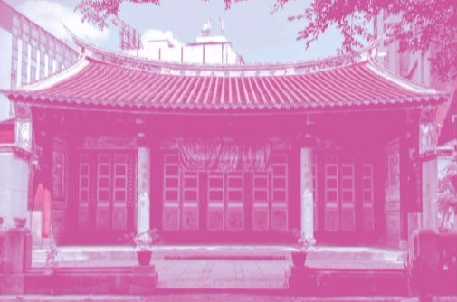
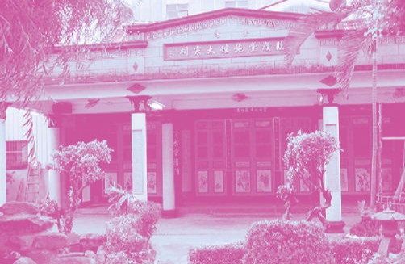
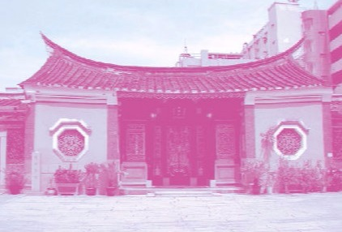
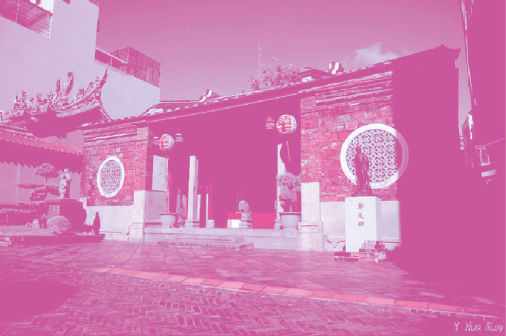

01 人物與事蹟
家廟的靈魂人物圖鑑-說說過去那些人的那些事。
人物圖鑑'圖解與比較
07月01日, 2020

02 圖案與符號
家廟裡的圖騰-畫在牆上故事,向人們訴說著什麼。
圖騰轉譯‘重譯圖像
傳統的未來感
06月23日, 2020

03儀式與器物
祭典的意義-圖說儀式與解析器物。
以季節來執行、祭文的現代感，以陳德聚堂為例
03月01日, 2020

04空間與時間
家廟空間的歷代使用，關乎時代的氛圍?
空間使用的改變
與人情連結方法的進化
04月13日, 2020
神祕專題
1
飲用一碗家廟精神的心靈雞湯
近期發表
再見傳統
2
不正統的家廟史
近期發表
都是自己人
3
世界一家親
近期發表
場所不變
4
永遠的家